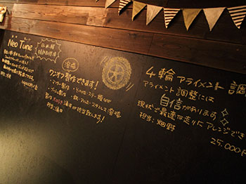
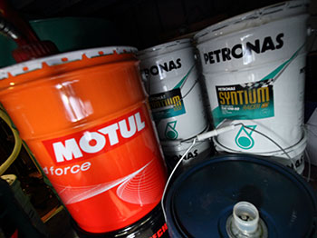
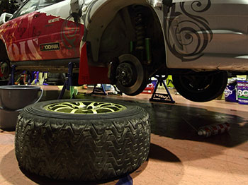
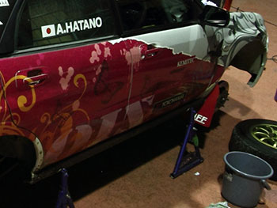
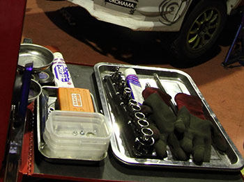

メンテナンス
お車のメンテナンスお任せください！
オイル交換から部品取り付けまでなんでも対応いたします
お車のメンテナンス

お車の調子はいかがですか？
オイル交換から部品取り付け、車検、整備方針のご相談までZioになんでもお伝えください。
街乗りからスポーツ走行までお車の御利用用途、年式に合わせて最適のメンテナンスを提供いたします。

エンジンから変な音がする、急に燃費がわるくなってきた、加速が鈍い などなど・・・
オイルが汚れているとよく出る症状です。3000km〜5000kmに一度オイル交換をしましょう。
- エンジンオイル交換
- 作業時間：30分 工賃：1,000円〜 オイル代：1,200円/1L〜
- 各種オイルを取り揃えております。お問い合わせください
- ミッションオイル交換
- 作業時間：30分 工賃：2,500円〜 (別途オイル代)
- 各種オイルを取り揃えております。お問い合わせください
- デフオイル交換
- 作業時間：30分 工賃：2,500円〜 (別途オイル代)
- 各種オイルを取り揃えております。お問い合わせください
セット割引もあります！オイル交換２つセットで工賃500円引き！3つセットで1,000円引き！

タイヤがすり減ったり、ゴムが固くなってしまったりすると雨の日などにスリップしてしまい大変危険です
お車に合わせたタイヤの取り寄せから取り付けまで対応いたします
作業時間：60分 タイヤ交換工賃:2,000円〜（1本）

お車の擦り傷・凹み傷、塗装痛みなどなど・・・板金・塗装もお任せください
交通事故による修理の保険対応も可能です

社外パーツのお取り寄せ＆取り付け、ワンオフマフラー作成・お車に合わせたステー作成など
溶接大好きスタッフがお客さまのご要望にお答えします
お支払い

現金でのお支払い以外に、VISA・マスターカード・アメックスの各種クレジットカードもご利用いいただけます。
その他、アプラスローンではご利用時にTポイントもついてさらにお得に！